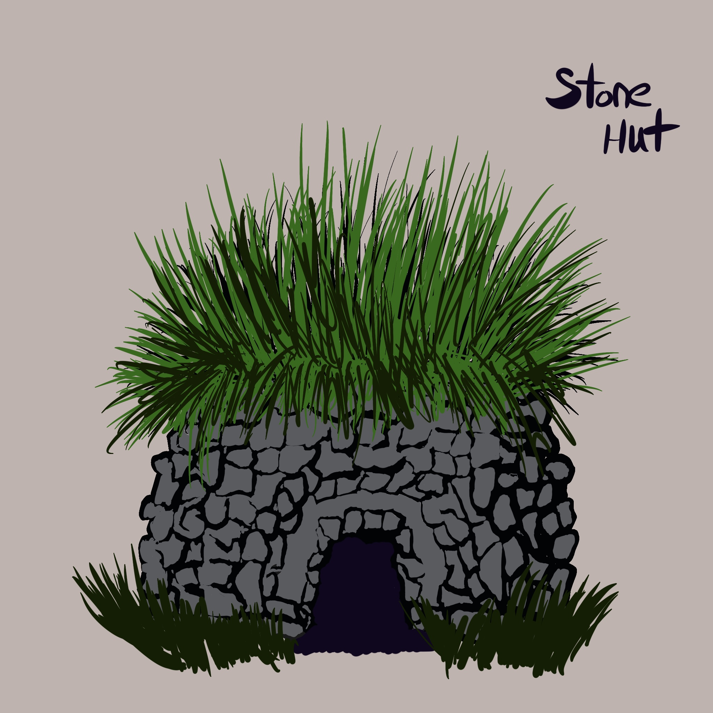

Native Americans invented Teepees around 500 BC. Noted for being, portable, heat-resistant, and water-proof.
The Sioux, Inuit and Samoan cultures invented some of the earliest forms of "tiny homes" with teepees (also spelled "tipis"), igloos and grass-roof huts, respectively.
Native Americans invented Teepees around 500 BC. Noted for being, portable, heat-resistant, and water-proof.
Mongolians invented Yurts around 1000 BC.
Other Examples
